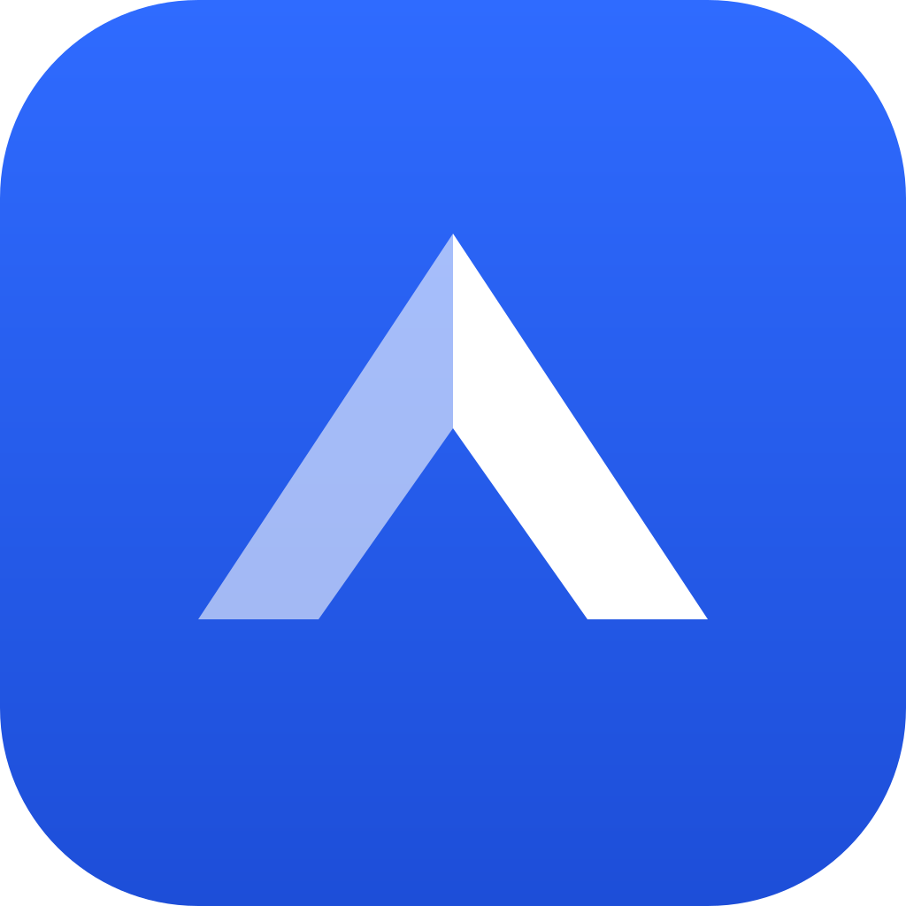

Smart Access — propuesta de logo
App icon (icon.svg) a tamaños reales

192–512px
120/180px
96px
48px
32px favicon
Mark (logo-mark.svg, blanco) sobre fondos de color
icon.svg
Lockup (como en login / header)
Smart Access
Control de Acceso Residencial